| Lage des Ortes: | Niederösterreich, nordwestlich von Wien, bei Sieghartskirchen. |
| Bezirk: | Tulln an der Donau |
| Herrschaft: | Judenau |
| Forstamt: | Judenau |
| Forstrevier: | Dietersdorf |
| Evidenznummer: | 091a |
| Abmessungen: | nicht festgestellt |
Beschreibung:
Stark verwitterter Stein mit einer deutschen Inschrift, die nur schwer zu lesen ist (in eckigen Klammern steht die wahrscheinliche Mutmaßung):
„Fürst Joh[annes] Eich[en] xxxx Jä[hr. Reg. Jubil.] [XII. Nov. MDCCCXCVIII]“Der Gedenkstein befindet sich in der Nähe des „Roten Kreuzes“, im Wald bei der Kreuzung der Waldwege nach Röhrenbach, Abstetten und Sieghartskirchen.
Erwähnungen in Literatur und historischen Quellen:
Topographie von Sieghartskirchen von Gustav Loidold 1913, Seite 37: „Arnberg: In letzterem steht das sogenannte Rote Kreuz, mitten im Walde als Grenzscheide der Wege nach Röhrenbach, Abstetten und Sieghartskirchen. Außerdem findet man dort ein Denkmal der Herrschaft Lichtenstein.“
Heimatbuch Abstetten 1987, Seite 183: „1898: 40 Jahre Liechtenstein, beim Roten Kreuz 40 Eichen und Gedenkstein“
Sieghartskirchen Ein Heimatbuch (2001), Seite 123:
„Das Revier Dietersdorf bildete einen Teil der Herrschaft Judenau und befand sich in ununterbrochenem Besitz der Familie Liechtenstein. 1898 wurden zur Feier des 40-jährigen Regierungsjubiläums von Johann II. von Liechtenstein in der unmittelbaren Nähe des „Roten Kreuzes“ 40 Eichen gesetzt. Ein Gedenkstein erinnert an den Anlaß.“
2006 - Die Fotografien hat Herr Andreas Bohnec geschickt.
 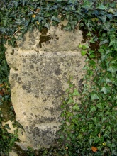
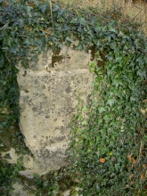
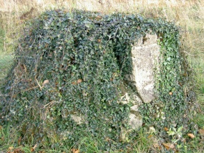
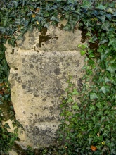
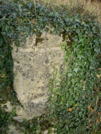
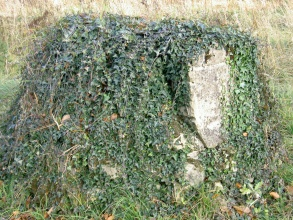

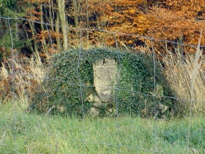
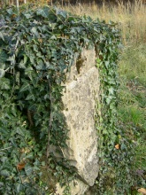
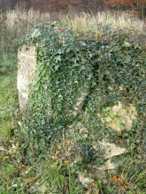
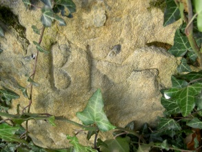
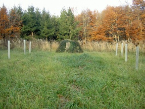
Verweise auf externe Web-Seiten:
http://www.sieghartskirchen.com/FZK/D7/01.jpg
- Beschreibung und Foto.
http://www.sieghartskirchen.com/FZK/D7/03.pdf
- Inschrift auf dem Gedenkstein, Geschichte des Denkmals.
http://www.sieghartskirchen.com/FZK/D7/2.pdf
- Standort des "Roten Kreuzes".
{kind=link}
{kind=link}
{kind=link}
{kind=link}
{kind=link}
{kind=link}
{kind=link}
{kind=link}